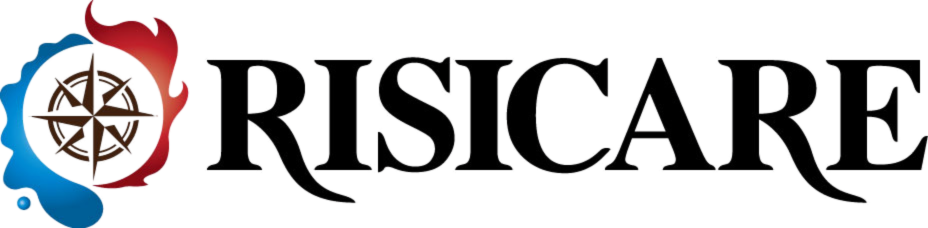
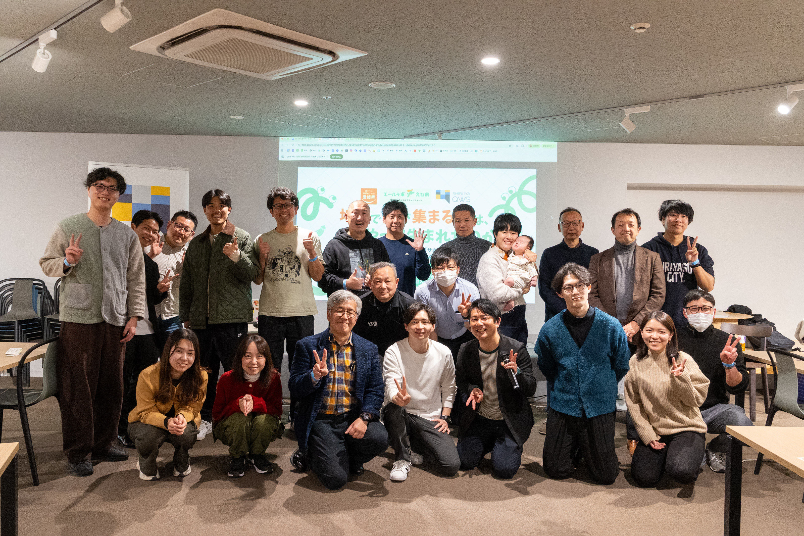
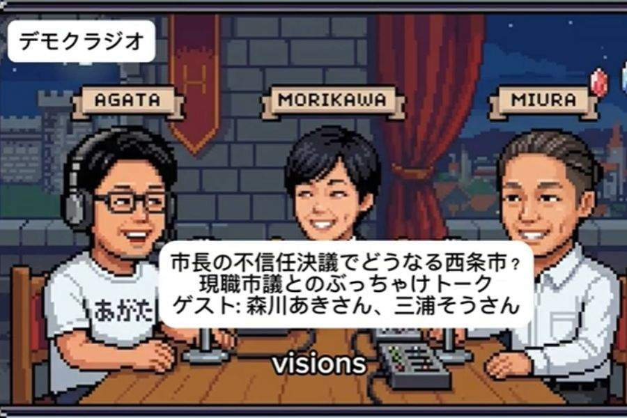
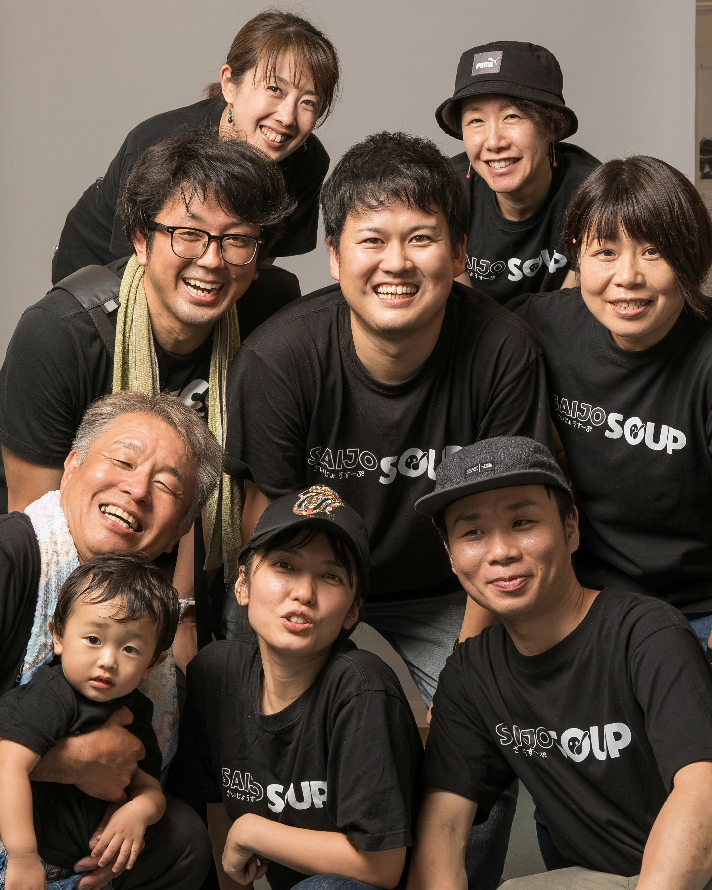
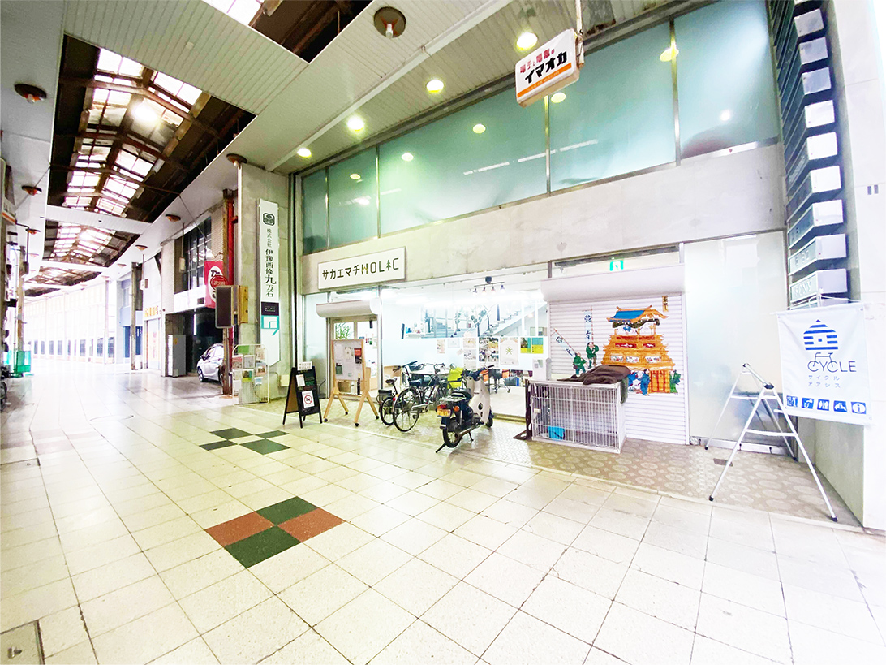
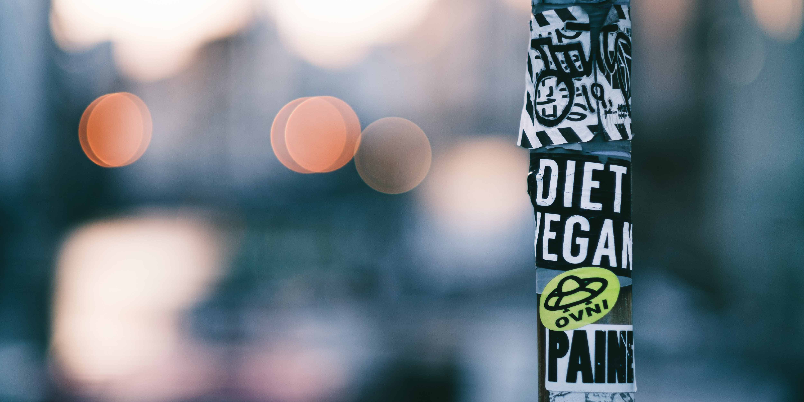

CULTIVATING A LOCAL CHALLENGER ECOSYSTEM
「地方には何もない」「出る杭は打たれる」？ 退屈な常識は、僕らの手でぶっ壊そう。そして余白を面白いことで塗りつぶそう。 僕らがここ、愛媛県西条市で創り出しているのは、単なる「場所」じゃない。 一人ひとりの「偏愛」が巨大なうねりとなっていく「挑戦の渦」だ！ 挑戦を文化にしていこう。生き残る地域には挑戦者が必要だ。

「地方には何もない」「出る杭は打たれる」？ 退屈な常識は、僕らの手でぶっ壊そう。そして余白を面白いことで塗りつぶそう。 僕らがここ、愛媛県西条市で創り出しているのは、単なる「場所」じゃない。 一人ひとりの「偏愛」が巨大なうねりとなっていく「挑戦の渦」だ！ 挑戦を文化にしていこう。生き残る地域には挑戦者が必要だ。

内閣府地域活性化伝道師
「おもしろき こともなき世を おもしろく」を地方で体現する起業家兼活動家。
サカエマチHOLICを中心に、このコミュニティから日々新しいプロジェクトが生まれています。圧倒的な才能と熱量を持つ挑戦者の生態系を耕しています。


 実績①
実績① 実績②
実績② 実績③
実績③ 実績④
実績④
実績⑤
実績⑥
実績⑦かつて人波で溢れた商店街。今はシャッターが目立つその一角に、外から見れば静かな、しかし内側では熱く燃え上がる「火種」があります。
それがサカエマチHOLICです。
ハーバード大学の政治学者、エリカ・チェノウェス氏は「3.5％ルール」を提唱しました。「全人口のわずか3.5％が積極的に参加すれば、社会変革は成功する」という理論です。
私たちは、この数字を単なる理想で終わらせるつもりはありません。
現在115名のメンバーが集うこの場所を、3年後には350人のコミュニティへと成長させる。この街の空気を変え、新しい時代のスタンダードを創り出すための「3.5％」を、今、着実に形にし始めています。
現在、サカエマチHOLICに集まっているのは、最前線で旗を振る「挑戦者」だけではありません。
「何か面白いことに加わりたい」
「今の自分を少しだけ変えてみたい」
「頑張っている誰かを応援したい」
そんな想いを持ったフォロワー層も厚く、市外・県外からの参加者はすでに2割に達しました。ここには、単なるビジネスの損得勘定ではない、地域ならではの「贈与経済（GIVEの文化）」が芽生えています。
「ギブ・アンド・テイク」という資本主義の論理から一歩離れ、まず自分から手渡す。この場所には、かつての日本が持っていた「お節介な温かさ」と「最先端の感性」が同居しています。だからこそ、都市部から訪れる人々も、どこか懐かしさを覚えながら「新しい社会の形」をそこに感じるのです。
日々生まれる小さな助け合いは、10年後、この街のDNAとなって大きな花を咲かせるはずです。

この「静かな革命」の正体は、資料を読むだけでは分かりません。
350人へと向かう熱量の真っ只中に、実際に足を運び、空気を感じ、ここに集う人々の目を見てください。あなたの地域を、組織を、そしてあなた自身をアップデートするヒントが、このシャッター通りの一角に息づいています。

独自の強みを磨き上げるブランディングと仲間とのコミュニティを提供。確信を持って次の一歩を踏み出せるあなたへ。
地域おこし協力隊の定着や起業家輩出を泥臭く伴走。予算を未来への投資に変え、「挑戦者が自走し続ける強い街」の基礎を築きます。
戦略の壁打ちからAI効率化まで。採用リスクゼロで経営者が本来の仕事に専念できる環境を即構築します。
新しい風を、一緒に。まずは気軽な「壁打ち」から始めてみませんか？